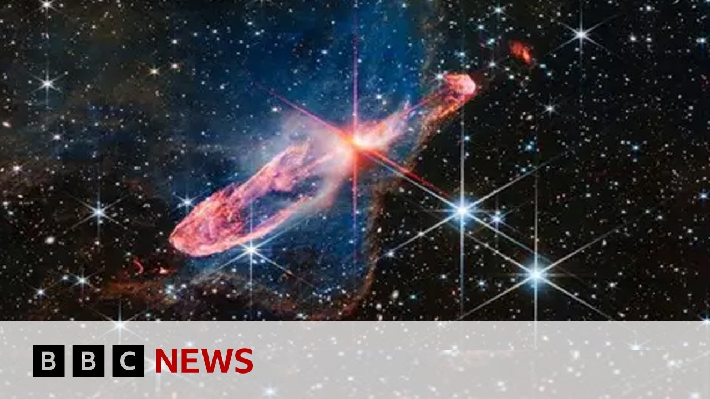

【科学家竞相探索宇宙存在之谜 | BBC新闻】
Summary: Researchers in the US are building a new particle detector called DUNE to study neutrinos and uncover why the universe is matter-dominated, while Japan's HyperK project uses water detectors to advance faster.
摘要： 美国研究人员正在建造名为DUNE的新型粒子探测器，通过研究中微子来揭示宇宙为何由物质主导，而日本的HyperK项目则利用水探测器以更快速度推进研究。

⏱️ Estimated Reading Time: 5 min
Researchers in the US have begun building a new particle detector that they hope will help find an answer to a very big question.
美国研究人员已开始建造一种新型粒子探测器，希望借此解答一个重大疑问。
Just why does the universe exist?
宇宙为何存在？
The project is known as the deep underground neutrino experiment or DUNE for short.
该项目名为“深地下中微子实验”，简称DUNE。
And we'll study subatomic particles.
我们将研究亚原子粒子。
Let's speak to Dr. Mark Scott, senior lecturer in neutrino physics at Imperial College uh London.
现在连线伦敦帝国理工学院中微子物理学高级讲师马克·斯科特博士。
Dr. Scott, thank you very much for joining us.
斯科特博士，非常感谢您的参与。
We've got two projects that we need to talk about, one American, one Japanese.
我们需要讨论两个项目，一个来自美国，一个来自日本。
Let's start with how the science works behind what you're trying to uh discover in words of one or two syllables if you can.
请用简单语言解释你们试图发现的科学原理。
Uh I'll try my best.
我会尽力解释。
Thank you.
谢谢。
Um so yeah, we're studying a fundamental particle uh known as nutrino.
我们正在研究一种名为中微子的基本粒子。
And it comes in three different uh types, things we call flavors.
它分为三种不同类型，我们称之为“味”。
So we have electron, muon, and tow type nutrinos.
即电子中微子、缪子中微子和陶子中微子。
Now these uh experiments, the one in the US and HyperK, the one I work on in Japan, we create very powerful beams of nutrinos and fire them hundreds of kilometers.
美国的DUNE和日本的HyperK实验都会产生强中微子束，并发射数百公里。
And when we create these beams, as they travel, the nutrinos change between these three different types.
这些中微子束在传播过程中会在三种类型间转换。
Uh so a muon nutrino may change into an electron nutrino for instance.
例如缪子中微子可能转变为电子中微子。
Uh and what the experiments are looking for is very subtle differences between how matter nutrinos change compared to antimatter nutrinos.
实验旨在寻找物质中微子与反物质中微子转换间的细微差异。
Uh and if we see that these are different, it might tell us why the universe we live in uh appears to be dominated by matter rather than antimatter.
若发现差异，或许能解释为何我们生活的宇宙由物质而非反物质主导。
Why does it have to be so far underground?
为何探测器需深埋地下？
We're seeing pictures of the tunneling that's had to go on to enable this to happen.
我们看到为实现这一目标而进行的隧道挖掘画面。
So the detectors are very very sensitive.
这些探测器极其敏感。
They're looking for extremely rare and extremely low energy events.
它们需要捕捉极其罕见且低能量的事件。
And the Earth is surrounded by an atmosphere and it's continually bombarded with particles uh mainly from the sun but also from elsewhere in our solar system.
地球被大气层包围，持续遭受主要来自太阳及太阳系其他地方的粒子轰击。
Uh these particles are raining down on us on the surface of the planet.
这些粒子如雨点般落在地球表面。
And so if we built our detectors on the surface, they would just be swamped by this um background.
若将探测器建在地表，会被这种本底信号淹没。
uh we call them cosmic rays and so we dig them underground and put usually a mountain on top if we can to shield ourselves from this.
我们称之为宇宙射线，因此将探测器埋入地下，通常还会用山体遮挡。
How is it then that the Japanese-led hyper project is ahead of the American June project?
为何日本主导的HyperK项目领先于美国的DUNE项目？
Uh yeah, this is an interesting question.
这是个有趣的问题。
So the two collaborations made uh decisions early on in the uh design of their experiments.
两个团队在实验设计初期做了不同选择。
Uh and the Japanese group HyperK chose to use uh water detectors as their technology.
日本HyperK团队选择水探测器技术。
Uh whereas the US-led group Dune uses liquid argon.
而美国DUNE团队使用液态氩。
Um so liquid argon is very nice.
液态氩性能优异。
It gives you a very detailed look at what's happening in your experiment but it's very hard to get a large volume of liquid argon and so they had to do a lot more development of their detector whereas the water technology used in Japan uh was well understood and it's much easier to make a larger detector.
它能提供精细的实验数据，但获取大量液态氩困难，需更多研发；而日本采用的水技术更成熟，更易建造大型探测器。
Uh so the design for hyper cameo cande has uh I think 225,000 tons of water whereas the design for dune has 40,000 tons of liquid argon so roughly five five and a half times bigger.
HyperK设计容量为22.5万吨水，而DUNE为4万吨液态氩，前者约是后者的5.5倍。
Well they don't they don't call it a space race for nothing I suppose and it's an apt description on this occasion.
这场“竞赛”名副其实。
Dr. Mark Scott from Imperial College London thank you very much for taking us gently through the science.
伦敦帝国理工学院的马克·斯科特博士，感谢您深入浅出的讲解。
Thank you.
谢谢。
Thank you.
谢谢。